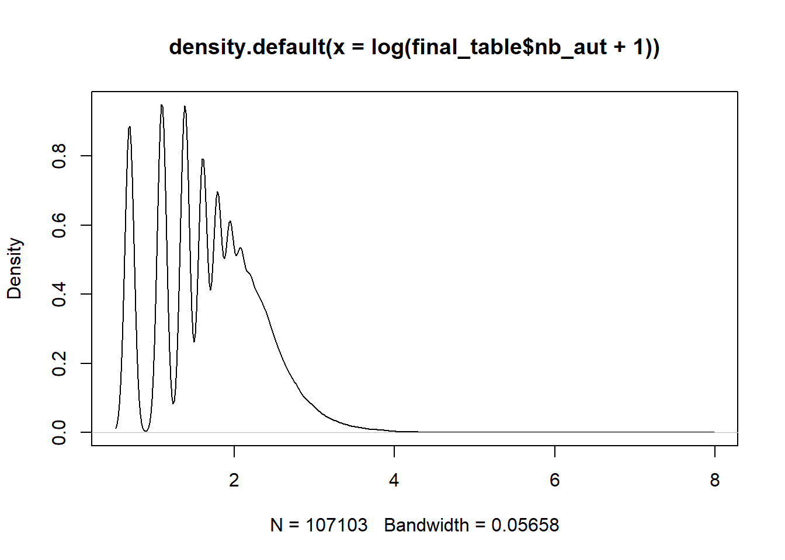

# R dplyr
library(tidyverse)
library(tictoc)
# Import the two datasets using readr's read_csv funciton
tic()
table_1 = read_csv(file = 'data/table_1.csv')## Rows: 148916 Columns: 7
## -- Column specification --------------------------------------------------------
## Delimiter: ","
## chr (7): pmid, doi, title, source, language, pubtype, pubmodel
##
## i Use `spec()` to retrieve the full column specification for this data.
## i Specify the column types or set `show_col_types = FALSE` to quiet this message.table_2 = read_csv(file = 'data/table_2.csv')## Rows: 148916 Columns: 6
## -- Column specification --------------------------------------------------------
## Delimiter: ","
## chr (5): pmid, authors, year_pub, has_data, oa
## dbl (1): cited
##
## i Use `spec()` to retrieve the full column specification for this data.
## i Specify the column types or set `show_col_types = FALSE` to quiet this message.cities = read_csv(file = 'data/cities_loc.csv')## Rows: 13751 Columns: 4
## -- Column specification --------------------------------------------------------
## Delimiter: ","
## chr (2): city, country
## dbl (2): lng, lat
##
## i Use `spec()` to retrieve the full column specification for this data.
## i Specify the column types or set `show_col_types = FALSE` to quiet this message.toc()## 2.07 sec elapsedRemove articles with no pmid and no DOI, and all articles before 1975
# R dplyr
tic()
table_1 = table_1 %>%
filter(pmid != 'null' & doi != 'null')
table_2 = table_2 %>%
filter(pmid != 'null' & year_pub > 1975)
toc()## 0.09 sec elapsedMerge the two datasets, pmid is unique for each paper
# R dplyr
tic()
final_table = inner_join(table_1, table_2, by = 'pmid')
toc()## 0.03 sec elapsedfinal_table = na.omit(final_table)
final_table## # A tibble: 108,721 x 12
## pmid doi title source language pubtype pubmodel authors year_pub has_data
## <chr> <chr> <chr> <chr> <chr> <chr> <chr> <chr> <chr> <chr>
## 1 32837~ 10.1~ The ~ MED eng "{\"pu~ "\"Prin~ <AUTHO~ 2020 N
## 2 32196~ 10.1~ Hypo~ MED eng "{\"pu~ "\"Prin~ <AUTHO~ 2020 N
## 3 32778~ 10.1~ The ~ MED eng "{\"pu~ "\"Prin~ <AUTHO~ 2020 N
## 4 32730~ 10.1~ A co~ MED eng "{\"pu~ "\"Prin~ <AUTHO~ 2020 N
## 5 32394~ 10.1~ A gl~ MED eng "{\"pu~ "\"Prin~ <AUTHO~ 2020 N
## 6 32257~ 10.1~ COVI~ MED eng "{\"pu~ "\"Elec~ <AUTHO~ 2020 N
## 7 32720~ 10.1~ The ~ MED eng "{\"pu~ "\"Prin~ <AUTHO~ 2020 N
## 8 32196~ 10.1~ Labo~ MED eng "{\"pu~ "\"Prin~ <AUTHO~ 2020 Y
## 9 32656~ 10.1~ The ~ MED eng "{\"pu~ "\"Prin~ <AUTHO~ 2020 N
## 10 32732~ 10.1~ Cycl~ MED eng "{\"pu~ "\"Prin~ <AUTHO~ 2020 N
## # ... with 108,711 more rows, and 2 more variables: oa <chr>, cited <dbl>plot distribution for the log(number of authors +1)
# R
plot(density(log(final_table$nb_aut+1)))
How many papers contains ‘deep learning’ or ‘machine learning’ and ‘neural network’ (also with a ‘s’ for neural networks) in their title ? Create a binary variable to save this information. What is the mean of authors for ML papers and non-ML papers ? Transform has_data and oa into binary variable also, what is the share of ML paper that are oa ?
# R dplyr
tic()
final_table = final_table %>%
mutate(title = tolower(title),
ML = ifelse(str_detect(title,'deep learning|machine learning|neural networks?'), 1, 0),
has_data = ifelse(has_data == 'Y', 1, 0),
oa = ifelse(oa == 'Y', 1, 0))
toc()## 6.89 sec elapsedsum(final_table$ML)## [1] 222sum(final_table$oa)## [1] 77847sum(final_table$has_data)## [1] 23980tic()
final_table %>%
group_by(ML) %>%
summarize(mean_nb_aut = mean(nb_aut))## # A tibble: 2 x 2
## ML mean_nb_aut
## <dbl> <dbl>
## 1 0 5.77
## 2 1 6.06toc()## 0.02 sec elapsedtic()
final_table %>%
group_by(ML) %>%
summarize(n = sum(oa)/n(),
citation = mean(cited))## # A tibble: 2 x 3
## ML n citation
## <dbl> <dbl> <dbl>
## 1 0 0.727 11.3
## 2 1 0.802 1.05toc()## 0.02 sec elapsedClean up pub_type, for simplicity just get the first type
# R dplyr
tic()
final_table = final_table %>%
mutate(pub_type = str_match_all(pubtype, '\\[\\"(.*?)\\"')[[1]][2])
toc()## 2.66 sec elapsedfinal_table %>%
select(pubtype,pub_type)## # A tibble: 107,103 x 2
## # Rowwise:
## pubtype pub_type
## <chr> <chr>
## 1 "{\"pubType\": [\"review-article\", \"Review\", \"Journal Arti~ review-artic~
## 2 "{\"pubType\": [\"review-article\", \"Journal Article\"]}" review-artic~
## 3 "{\"pubType\": [\"review-article\", \"Review\", \"Journal Arti~ review-artic~
## 4 "{\"pubType\": [\"review-article\", \"Review\", \"Journal Arti~ review-artic~
## 5 "{\"pubType\": [\"review-article\", \"Review\", \"Journal Arti~ review-artic~
## 6 "{\"pubType\": [\"review-article\", \"Review\", \"Journal Arti~ review-artic~
## 7 "{\"pubType\": [\"review-article\", \"Review\", \"Journal Arti~ review-artic~
## 8 "{\"pubType\": [\"review-article\", \"Review\", \"Journal Arti~ review-artic~
## 9 "{\"pubType\": [\"Editorial\"]}" Editorial
## 10 "{\"pubType\": [\"Editorial\"]}" Editorial
## # ... with 107,093 more rowsWhat is the pub type with the highest mean/sd of citation ? (use cited and the cleaned pub_type)
# R dplyr
final_table %>%
group_by(pub_type) %>%
summarize(mean = mean(cited),
sd = sd(cited)) %>%
arrange(desc(mean))## # A tibble: 83 x 3
## pub_type mean sd
## <chr> <dbl> <dbl>
## 1 Consensus Development Conference 94.1 392.
## 2 Research Support, American Recovery and Reinvestment Act 64.4 77.2
## 3 Research Support, U.S. Gov't, P.H.S. 54.0 97.1
## 4 Research Support, N.I.H., Intramural 48.5 144.
## 5 Clinical Trial, Phase II 35.3 74.0
## 6 Clinical Conference 30.4 84.3
## 7 Comparative Study 29.3 57.1
## 8 Controlled Clinical Trial 27 49.3
## 9 Research Support, Non-U.S. Gov't 26.3 67.8
## 10 Clinical Trial 24.9 56.6
## # ... with 73 more rowsfinal_table %>%
group_by(pub_type) %>%
summarize(mean = mean(cited),
sd = sd(cited)) %>%
arrange(desc(sd))## # A tibble: 83 x 3
## pub_type mean sd
## <chr> <dbl> <dbl>
## 1 Consensus Development Conference 94.1 392.
## 2 Research Support, N.I.H., Intramural 48.5 144.
## 3 Research Support, U.S. Gov't, P.H.S. 54.0 97.1
## 4 editorial 7.28 90.8
## 5 Clinical Conference 30.4 84.3
## 6 Research Support, American Recovery and Reinvestment Act 64.4 77.2
## 7 Clinical Trial, Phase II 35.3 74.0
## 8 Research Support, Non-U.S. Gov't 26.3 67.8
## 9 Video-Audio Media 12 61.6
## 10 Comparative Study 29.3 57.1
## # ... with 73 more rowsWhich are the most representative countres by year ? Store this information in an other tibble by keep only pmid and authors, get the country for each author from the loc_cities.csv. You may want to separate rows for each authors to get all countries involved in the paper,if an authors have multiple affiliations, take the first one.
# R dplyr
countries = tolower(unique(cities$country))
tic()
countries_tibble = final_table %>%
select(pmid,authors) %>%
separate_rows(authors, sep = '<AUTHOR>')
toc()## 8.37 sec elapsedcountries_tibble %>%
select(authors)## # A tibble: 725,396 x 1
## authors
## <chr>
## 1 ""
## 2 " Das SK Subir Kumar Das<AFFILIATION>Department of Biochemistry, College of ~
## 3 ""
## 4 " Lin L Ling Lin<AFFILIATION>Department of Infectious Diseases, Peking Union~
## 5 " Lu L Lianfeng Lu<AFFILIATION>Department of Infectious Diseases, Peking Uni~
## 6 " Cao W Wei Cao<AFFILIATION>Department of Infectious Diseases, Peking Union ~
## 7 " Li T Taisheng Li<AFFILIATION>Department of Infectious Diseases, Peking Uni~
## 8 ""
## 9 " Bchetnia M Mbarka Bchetnia<AFFILIATION>Université du Québec à Chicoutimi (~
## 10 " Girard C Catherine Girard<AFFILIATION>Université du Québec à Chicoutimi (U~
## # ... with 725,386 more rowstic()
countries_tibble = countries_tibble %>%
rowwise() %>%
filter(authors !="" & !str_detect(authors, '<AFFILIATION>None'))
toc()## 16.06 sec elapsedcountries_tibble %>%
select(authors)## # A tibble: 476,357 x 1
## # Rowwise:
## authors
## <chr>
## 1 " Das SK Subir Kumar Das<AFFILIATION>Department of Biochemistry, College of ~
## 2 " Lin L Ling Lin<AFFILIATION>Department of Infectious Diseases, Peking Union~
## 3 " Lu L Lianfeng Lu<AFFILIATION>Department of Infectious Diseases, Peking Uni~
## 4 " Cao W Wei Cao<AFFILIATION>Department of Infectious Diseases, Peking Union ~
## 5 " Li T Taisheng Li<AFFILIATION>Department of Infectious Diseases, Peking Uni~
## 6 " Bchetnia M Mbarka Bchetnia<AFFILIATION>Université du Québec à Chicoutimi (~
## 7 " Girard C Catherine Girard<AFFILIATION>Université du Québec à Chicoutimi (U~
## 8 " Duchaine C Caroline Duchaine<AFFILIATION>Centre de recherche, Institut uni~
## 9 " Laprise C Catherine Laprise<AFFILIATION>Université du Québec à Chicoutimi ~
## 10 " Liu J Jie Liu<AFFILIATION>Department of Anesthesiology, Union Hospital, To~
## # ... with 476,347 more rowstic()
countries_tibble = countries_tibble %>%
group_by(pmid,authors) %>%
mutate(authors = strsplit(authors,'<AFFILIATION>')[[1]][2]) %>%
filter(!duplicated(pmid, authors))
toc()## 38.13 sec elapsedcountries_tibble %>%
select(authors)## Adding missing grouping variables: `pmid`## # A tibble: 291,650 x 2
## # Groups: pmid, authors [291,650]
## pmid authors
## <chr> <chr>
## 1 32837036 "Department of Biochemistry, College of Medicine and JNM Hospital, ~
## 2 32196410 "Department of Infectious Diseases, Peking Union Medical College Ho~
## 3 32196410 "Department of Infectious Diseases, Peking Union Medical College Ho~
## 4 32778421 "Université du Québec à Chicoutimi (UQAC), Département des sciences~
## 5 32778421 "Centre de recherche, Institut universitaire de cardiologie et de p~
## 6 32778421 "Université du Québec à Chicoutimi (UQAC), Département des sciences~
## 7 32730205 "Department of Anesthesiology, Union Hospital, Tongji Medical Colle~
## 8 32730205 "Department of Anesthesiology, Union Hospital, Tongji Medical Colle~
## 9 32394467 "Department of Immunology, Semnan University of Medical Sciences, S~
## 10 32394467 "Department of Bacteriology and Virology, Semnan University of Medi~
## # ... with 291,640 more rows# R dplyr
tic()
countries_tibble = countries_tibble %>%
mutate(authors = str_replace_all(authors, ' USA', 'United States'),
authors = str_replace_all(authors, ' UK', 'United Kingdom'),
authors = str_replace_all(authors, ' Korea', 'South Korea'),
authors = tolower(authors))
toc()## 113.01 sec elapsedtic()
countries_tibble = countries_tibble %>%
group_by(pmid, authors) %>%
mutate(country = ifelse(any(str_detect(authors, countries)),
countries[str_detect(authors, countries)][1],
"")) %>%
select(-authors)## Adding missing grouping variables: `authors`toc()## 571.11 sec elapsedtic()
countries_tibble = countries_tibble %>%
filter(country != '') %>%
distinct(pmid, country)
toc()## 4.09 sec elapsedcountries_tibble## # A tibble: 254,537 x 3
## # Groups: pmid, authors [254,537]
## authors pmid country
## <chr> <chr> <chr>
## 1 "department of biochemistry, college of medicine and jnm hos~ 328370~ india
## 2 "department of infectious diseases, peking union medical col~ 321964~ china
## 3 "department of infectious diseases, peking union medical col~ 321964~ china
## 4 "université du québec à chicoutimi (uqac), département des s~ 327784~ canada
## 5 "centre de recherche, institut universitaire de cardiologie ~ 327784~ canada
## 6 "université du québec à chicoutimi (uqac), département des s~ 327784~ canada
## 7 "department of anesthesiology, union hospital, tongji medica~ 327302~ china
## 8 "department of anesthesiology, union hospital, tongji medica~ 327302~ china
## 9 "department of immunology, semnan university of medical scie~ 323944~ iran
## 10 "department of bacteriology and virology, semnan university ~ 323944~ iran
## # ... with 254,527 more rowstic()
countries_tibble = left_join(countries_tibble,
final_table[,c('pmid','year_pub')],
by = 'pmid')
toc()## 4.45 sec elapsedtic()
countries_pub = countries_tibble %>%
group_by(country, year_pub) %>%
summarize(n = length(unique(pmid))) %>%
arrange(desc(n))## `summarise()` has grouped output by 'country'. You can override using the
## `.groups` argument.toc()## 0.05 sec elapsedSelect the top 25 of countries involved in coronavirus research since 2001, plot the evolution on a bar chart with plot_ly
Two usefull links:
# R
library(plotly)
library(kableExtra)##
## Attachement du package : 'kableExtra'## L'objet suivant est masqué depuis 'package:dplyr':
##
## group_rowsplot_top_n = function(n_top,year){
countries_top = countries_pub %>%
filter(year_pub >= year) %>%
group_by(country) %>%
summarize(n = sum(n)) %>%
arrange(desc(n)) %>%
ungroup() %>%
slice(1:n_top)
countries_top %>%
kbl(caption = "Top 25 most active countries in coronavirus research (2001-2021)") %>%
kable_classic(full_width = F, html_font = "Cambria")
countries_pub %>%
filter(country %in% as.matrix(countries_top$country) & year_pub >= year) %>%
plot_ly(x = ~year_pub, y = ~n, color = ~country) %>%
layout(yaxis = list(title = 'Count',type = 'log'), barmode = 'stack')
}
plot_top_n(25,2001)## No trace type specified:
## Based on info supplied, a 'bar' trace seems appropriate.
## Read more about this trace type -> https://plotly.com/r/reference/#bar